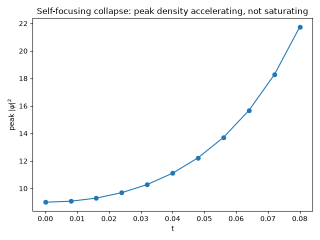

Note
Go to the end to download the full example code.
Self-focusing collapse of an attractive condensate#
Vladimir Zakharov showed in “Collapse of Langmuir Waves” (1972) that the
focusing nonlinear Schrodinger equation has a regime with no
shape-preserving soliton at all: a sufficiently intense, narrow wave
packet can self-focus so strongly that it contracts toward a genuine
singularity in finite time, rather than settling into a stable envelope.
gpe_evolve() solves the 2D
Gross-Pitaevskii / cubic NLS equation
and, run here with no trapping potential (\(V=0\)) and an attractive
interaction (\(g<0\), opposite sign convention from the 1D
nls_evolve solver), reproduces exactly the runaway contraction of a
sufficiently tall, narrow initial packet – the numerical, finite-grid
stand-in for approaching (never reaching) Zakharov’s collapse; the
calculation is stopped once the peak density is still visibly growing,
not carried through the unresolvable blow-up itself.
import matplotlib.pyplot as plt
import numpy as np
from physicskit.fields import animate_density_2d, gpe_energy, gpe_evolve, harmonic_trap_grid
A tall, narrow packet with attractive interactions and no trap#
Real-time propagation under the attractive (g < 0) nonlinearity#
Peak density grows monotonically – self-focusing collapse, not a stable soliton, which would instead hold its peak density fixed as it propagates.
To save the animation to a file instead of (or in addition to) displaying it interactively, use e.g.:
anim.save("self_focusing_collapse.gif", writer="pillow", fps=15)
print(f"peak density: t=0 -> {peak_density[0]:.3f}, t={times[-1]:.3f} -> {peak_density[-1]:.3f}")
print(f"density growth factor: {peak_density[-1] / peak_density[0]:.2f}x (a stable soliton would stay near 1.0x)")
peak density: t=0 -> 9.000, t=0.080 -> 21.743
density growth factor: 2.42x (a stable soliton would stay near 1.0x)
Peak density over the whole run: runaway growth, not a plateau#
The animation shows the packet visibly narrowing frame by frame, but plotting the already-recorded peak density against time directly shows the collapse accelerating – an ever-steepening curve, not the flat line a stable soliton (or the saturating curve of a process approaching some finite peak) would trace out.
fig2, ax2 = plt.subplots()
ax2.plot(times, peak_density, "o-")
ax2.set_xlabel("t")
ax2.set_ylabel(r"peak $|\psi|^2$")
ax2.set_title("Self-focusing collapse: peak density accelerating, not saturating")
fig2.tight_layout()

Check#
Norm is conserved while the peak keeps rising: with negative Hamiltonian the 2D attractive NLS must collapse (Vlasov-Petrishchev-Talanov virial identity).
norms = np.sum(np.abs(frames) ** 2, axis=(1, 2))
assert np.ptp(norms) < 1e-9 * norms[0]
assert gpe_energy(psi0, V, -2.0, X, Y, K2)["total"] < 0
assert np.all(np.diff(peak_density) > 0) and peak_density[-1] > 2 * peak_density[0]
Total running time of the script: (0 minutes 2.310 seconds)